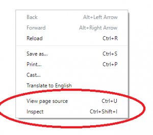
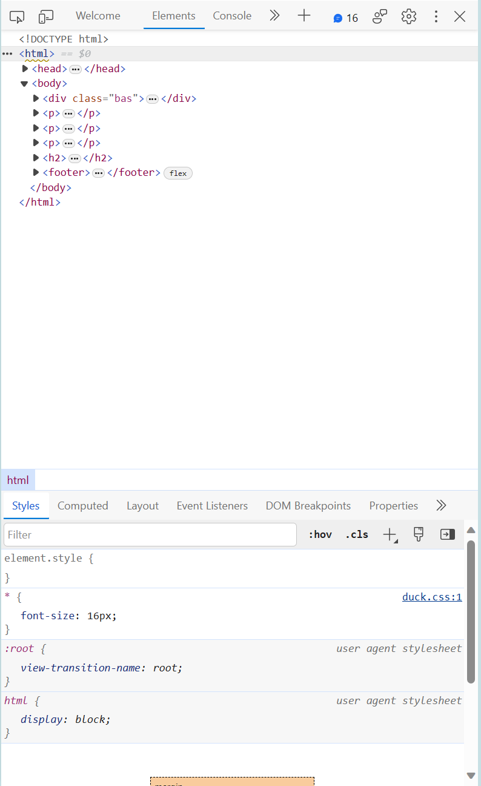
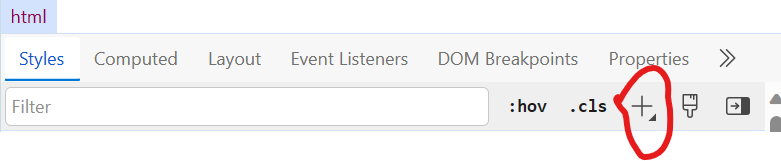

This website will be utilizing the Google Dev feature, which is available if you double click and press 'Inspect,' or if you press the keys ctrl and i.
This will allow for you to edit this website in order to get used to the CSS terminology and how each element works.
You will be expected to find links that will allow you to move on through the different levels. Each level will introduce a different topic and then using those lessons should lead you to being able to find the link.
In order to get to the Google Devs screen, first you must double click on this webpage and select the inspect function.
Once that happens, you should see this page on your right. On this page, you can see the different elements on the page, and select different elements in order to mess with their properties.
Something that will often be asked of you is to select the plus sign. It is located in the bottom half of the window and looks like this.
